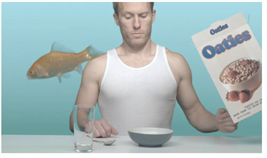

In this example, we’ll return to our first keying example to apply a garbage matte and clean-up the aquarium image.
| 1. | Go back to the node tree from the first example, and connect the Viewer to the Primatte1 node. Drag the time slider to frame 50. |
| 2. | Click an empty spot on the Node Graph to deselect all nodes. Then, right-click and choose Draw > RotoPaint. |
| 3. | At this point, you don’t need to connect the RotoPaint1 node to anything, but its control panel must be open, and the first tab, RotoPaint, should be active. |
| 4. | Inside the Viewer, you’ll see the goldfish image. Click the Bezier tool in the RotoPaint toolbar on the left side of the Viewer. Then in the Viewer, click four points around the goldfish to create a roto shape. You can drag+click to draw a point and adjust its curve at the same time. |
TIP: As long as the RotoPaint1 control panel is open, you can view and edit the roto shape. You can press Q over the Viewer to toggle the display overlay, if necessary. Click the right mouse button over any point to select options for the roto shape.
Because this is a garbage mask, we want to edit the shape to remove elements from the glass aquarium.
| 5. | Drag the points and adjust the tangents - the handles on each of the points - to refine the roto shape. |
Now we need to animate the garbage matte to follow the motion of the fish.
| 6. | In the RotoPaint tool settings panel, on top of the Viewer, the autokey option should be active. If not, click the box for this option. |
| 7. | Move the time slider to frame 1 and click the Transform tab in the RotoPaint control panel. Then select the entire Bezier shape in the stroke/shape list (at the bottom of the control panel) or by clicking one of the points in the shape using the SelectAll tool. A transform jack appears. |
| 8. | Drag the center point of the transform jack, and move it over the current position of the goldfish. |
| 9. | Go to end of the timeline, to frame 60. Drag the shape once more to adjust for the movement of the goldfish. |

If your Bezier shape is similar to the one shown above, then you probably don’t need more than the three key frames at frames 1, 50, and 60.
However, you may want to scrub through the timeline and make adjustments.
| 10. | Scrub to frame 60 on the timeline and you’ll see the roto gets a little close to corner-line that we want to remove from the aquarium glass. |
| 11. | Click on an empty spot in the Viewer to deselect all points. Then, press Ctrl/Cmd and click on the point near the goldfish’s nose, to temporarily break the point’s tangent handle. |
| 12. | Adjust the handles to create a peak at the fish’s nose. |

Now, for good measure, let’s create a feathered edge for this particular point.
| 13. | With the point selected, drag the feather handle away from the fish to create a feathered edge for this point, at this frame. |

So you’ve drawn and animated the roto shape. Let’s wire it into the node tree to mask out the “garbage.”
| 14. | Drag the bg connector off the Primatte1 node to disconnect it from the Reformat2 node. |
| 15. | Choose Merge > Merge from the right-click menu. Connect Primatte1 to the A input on the over node. Connect Reformat2 to the B input. |
| 16. | Connect the RotoPaint1 node to the mask connector on the over node. This effectively removes the aquarium reflections in the image. |
You might want to scrub through the timeline to see if there are places where you need to adjust the roto shape.
If you want to take this a little further, you can now add the goldfish to the composite from the second example.
| 17. | Select and drag the Merge (over) node and the RotoPaint1 node below the node tree you used for the IBK example. |

| 18. | Drag the Viewer node over, as well, and keep it connected to the Merge (over) node. |
| 19. | Drag the B connector from the Reformat2 node and connect it to the over node in the IBK node tree. |
The Viewer shows the result. Of course, you might want to add a Transform node after the first Merge (over) node, to size and position the goldfish. Otherwise, this project is completed.

|
|